Three-speaker separation: Librivox, 8 mics
Example 1
| Mixture |
|
||
|---|---|---|---|
| Ground-truth sources |

SI-SDR = -12.23 dB |

SI-SDR = -6.53 dB |

SI-SDR = 5.25 dB |
| Method | Separated source 0 | Separated source 1 | Separated source 2 |
| TI 64ms x 4 frames, BF2 |
SI-SDR = 8.96 dB |
SI-SDR = 11.35 dB |
SI-SDR = 19.22 dB |
| TI 64ms x 4 frames, MN3 |
SI-SDR = 9.40 dB |
SI-SDR = 9.59 dB |
SI-SDR = 16.62 dB |
| TI 64ms x 4 frames, block size 3.2s, BF2 |
SI-SDR = 4.80 dB |
SI-SDR = 6.40 dB |
SI-SDR = 14.98 dB |
| TI 64ms x 4 frames, block size 3.2s, MN3 |
SI-SDR = 6.14 dB |
SI-SDR = 6.98 dB |
SI-SDR = 14.86 dB |
| TV 128ms x 2 frames, BF2 |
SI-SDR = 0.02 dB |
SI-SDR = 2.72 dB |
SI-SDR = 14.21 dB |
| TV 128ms x 2 frames, MN3 |
SI-SDR = 3.99 dB |
SI-SDR = 5.38 dB |
SI-SDR = 13.82 dB |
Example 2
| Mixture |

|
||
|---|---|---|---|
| Ground-truth sources |

SI-SDR = -7.81 dB |
SI-SDR = 6.32 dB |

SI-SDR = -14.29 dB |
| Method | Separated source 0 | Separated source 1 | Separated source 2 |
| TI 64ms x 4 frames, BF2 |
SI-SDR = 14.02 dB |
SI-SDR = 20.73 dB |
SI-SDR = 12.71 dB |
| TI 64ms x 4 frames, MN3 |
SI-SDR = 10.79 dB |

SI-SDR = 18.31 dB |
SI-SDR = 10.34 dB |
| TI 64ms x 4 frames, block size 3.2s, BF2 |
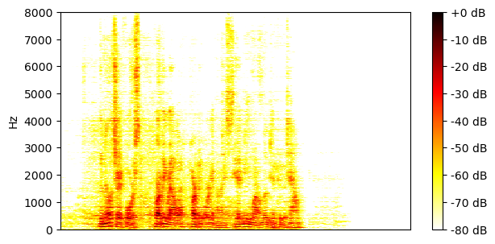
SI-SDR = 10.17 dB |
SI-SDR = 17.87 dB |
SI-SDR = 7.47 dB |
| TI 64ms x 4 frames, block size 3.2s, MN3 |
SI-SDR = 9.23 dB |
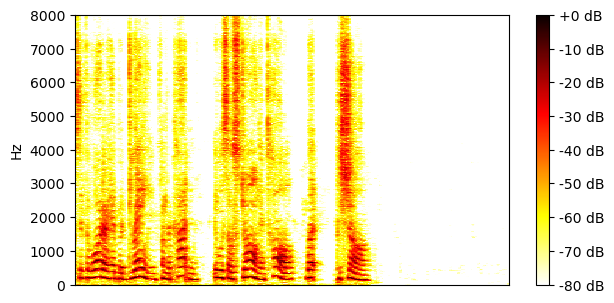
SI-SDR = 17.06 dB |
SI-SDR = 7.83 dB |
| TV 128ms x 2 frames, BF2 |
SI-SDR = 11.21 dB |
SI-SDR = 18.99 dB |
SI-SDR = 8.41 dB |
| TV 128ms x 2 frames, MN3 |
SI-SDR = 9.31 dB |
SI-SDR = 17.06 dB |
SI-SDR = 8.16 dB |
Example 3
| Mixture |

|
||
|---|---|---|---|
| Ground-truth sources |

SI-SDR = -20.87 dB |
SI-SDR = -17.78 dB |

SI-SDR = 16.60 dB |
| Method | Separated source 0 | Separated source 1 | Separated source 2 |
| TI 64ms x 4 frames, BF2 |
SI-SDR = 8.57 dB |
SI-SDR = 6.25 dB |

SI-SDR = 24.41 dB |
| TI 64ms x 4 frames, MN3 |
SI-SDR = 6.32 dB |
SI-SDR = 6.67 dB |
SI-SDR = 24.28 dB |
| TI 64ms x 4 frames, block size 3.2s, BF2 |
SI-SDR = 4.35 dB |
SI-SDR = 5.00 dB |
SI-SDR = 22.94 dB |
| TI 64ms x 4 frames, block size 3.2s, MN3 |
SI-SDR = 4.21 dB |
SI-SDR = 5.53 dB |
SI-SDR = 23.41 dB |
| TV 128ms x 2 frames, BF2 |
SI-SDR = 4.67 dB |
SI-SDR = 5.06 dB |

SI-SDR = 23.16 dB |
| TV 128ms x 2 frames, MN3 |
SI-SDR = 3.76 dB |
SI-SDR = 5.16 dB |
SI-SDR = 22.93 dB |
Example 4
| Mixture |

|
||
|---|---|---|---|
| Ground-truth sources |
SI-SDR = -29.41 dB |

SI-SDR = -29.96 dB |
SI-SDR = 25.31 dB |
| Method | Separated source 0 | Separated source 1 | Separated source 2 |
| TI 64ms x 4 frames, BF2 |
SI-SDR = -1.65 dB |
SI-SDR = -11.09 dB |
SI-SDR = 29.98 dB |
| TI 64ms x 4 frames, MN3 |
SI-SDR = -0.69 dB |
SI-SDR = -12.75 dB |

SI-SDR = 30.19 dB |
| TI 64ms x 4 frames, block size 3.2s, BF2 |
SI-SDR = -0.11 dB |
SI-SDR = -1.84 dB |
SI-SDR = 29.73 dB |
| TI 64ms x 4 frames, block size 3.2s, MN3 |
SI-SDR = 0.06 dB |
SI-SDR = -1.22 dB |
SI-SDR = 29.47 dB |
| TV 128ms x 2 frames, BF2 |
SI-SDR = -1.36 dB |
SI-SDR = -13.35 dB |
SI-SDR = 29.71 dB |
| TV 128ms x 2 frames, MN3 |
SI-SDR = -1.79 dB |
SI-SDR = -15.77 dB |
SI-SDR = 29.34 dB |
Example 5
| Mixture |

|
||
|---|---|---|---|
| Ground-truth sources |
SI-SDR = -10.68 dB |

SI-SDR = 4.10 dB |

SI-SDR = -6.04 dB |
| Method | Separated source 0 | Separated source 1 | Separated source 2 |
| TI 64ms x 4 frames, BF2 |
SI-SDR = 6.79 dB |
SI-SDR = 15.50 dB |
SI-SDR = 10.98 dB |
| TI 64ms x 4 frames, MN3 |
SI-SDR = 5.39 dB |
SI-SDR = 14.30 dB |
SI-SDR = 10.39 dB |
| TI 64ms x 4 frames, block size 3.2s, BF2 |
SI-SDR = 2.20 dB |
SI-SDR = 12.10 dB |
SI-SDR = 8.15 dB |
| TI 64ms x 4 frames, block size 3.2s, MN3 |
SI-SDR = 1.84 dB |
SI-SDR = 11.86 dB |
SI-SDR = 8.20 dB |
| TV 128ms x 2 frames, BF2 |

SI-SDR = -1.23 dB |
SI-SDR = 11.14 dB |
SI-SDR = 9.71 dB |
| TV 128ms x 2 frames, MN3 |
SI-SDR = -1.76 dB |
SI-SDR = 10.69 dB |
SI-SDR = 9.02 dB |
Example 6
| Mixture |

|
||
|---|---|---|---|
| Ground-truth sources |

SI-SDR = 14.06 dB |

SI-SDR = -19.82 dB |

SI-SDR = -15.07 dB |
| Method | Separated source 0 | Separated source 1 | Separated source 2 |
| TI 64ms x 4 frames, BF2 |
SI-SDR = 25.53 dB |
SI-SDR = 8.47 dB |
SI-SDR = 9.68 dB |
| TI 64ms x 4 frames, MN3 |
SI-SDR = 24.57 dB |
SI-SDR = 7.99 dB |
SI-SDR = 9.00 dB |
| TI 64ms x 4 frames, block size 3.2s, BF2 |
SI-SDR = 22.45 dB |
SI-SDR = 6.09 dB |
SI-SDR = 6.32 dB |
| TI 64ms x 4 frames, block size 3.2s, MN3 |
SI-SDR = 22.02 dB |
SI-SDR = 6.82 dB |
SI-SDR = 5.97 dB |
| TV 128ms x 2 frames, BF2 |
SI-SDR = 23.06 dB |
SI-SDR = 5.33 dB |
SI-SDR = 5.32 dB |
| TV 128ms x 2 frames, MN3 |
SI-SDR = 22.61 dB |
SI-SDR = 6.78 dB |
SI-SDR = 6.57 dB |
Example 7
| Mixture |

|
||
|---|---|---|---|
| Ground-truth sources |

SI-SDR = -0.40 dB |
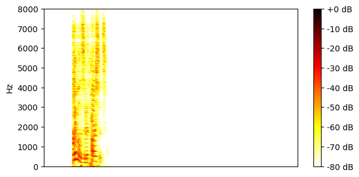
SI-SDR = -20.58 dB |

SI-SDR = 0.30 dB |
| Method | Separated source 0 | Separated source 1 | Separated source 2 |
| TI 64ms x 4 frames, BF2 |
SI-SDR = 12.62 dB |
SI-SDR = -2.04 dB |
SI-SDR = 13.90 dB |
| TI 64ms x 4 frames, MN3 |
SI-SDR = 12.20 dB |
SI-SDR = -1.09 dB |
SI-SDR = 13.51 dB |
| TI 64ms x 4 frames, block size 3.2s, BF2 |

SI-SDR = 8.87 dB |
SI-SDR = -3.33 dB |
SI-SDR = 9.63 dB |
| TI 64ms x 4 frames, block size 3.2s, MN3 |
SI-SDR = 9.85 dB |

SI-SDR = -7.06 dB |
SI-SDR = 12.41 dB |
| TV 128ms x 2 frames, BF2 |
SI-SDR = 5.24 dB |
SI-SDR = -6.23 dB |
SI-SDR = 6.40 dB |
| TV 128ms x 2 frames, MN3 |
SI-SDR = 8.32 dB |
SI-SDR = -5.86 dB |
SI-SDR = 9.38 dB |
Example 8
| Mixture |
|
||
|---|---|---|---|
| Ground-truth sources |

SI-SDR = 9.37 dB |

SI-SDR = -10.67 dB |

SI-SDR = -15.87 dB |
| Method | Separated source 0 | Separated source 1 | Separated source 2 |
| TI 64ms x 4 frames, BF2 |
SI-SDR = 19.90 dB |
SI-SDR = 10.16 dB |

SI-SDR = 9.29 dB |
| TI 64ms x 4 frames, MN3 |
SI-SDR = 18.15 dB |
SI-SDR = 7.17 dB |
SI-SDR = 8.55 dB |
| TI 64ms x 4 frames, block size 3.2s, BF2 |
SI-SDR = 16.59 dB |
SI-SDR = 5.66 dB |
SI-SDR = 6.36 dB |
| TI 64ms x 4 frames, block size 3.2s, MN3 |
SI-SDR = 16.70 dB |
SI-SDR = 5.52 dB |
SI-SDR = 6.65 dB |
| TV 128ms x 2 frames, BF2 |
SI-SDR = 17.16 dB |
SI-SDR = 6.15 dB |
SI-SDR = 6.73 dB |
| TV 128ms x 2 frames, MN3 |
SI-SDR = 16.50 dB |
SI-SDR = 5.23 dB |
SI-SDR = 6.41 dB |
Example 9
| Mixture |

|
||
|---|---|---|---|
| Ground-truth sources |

SI-SDR = 4.66 dB |

SI-SDR = -6.17 dB |
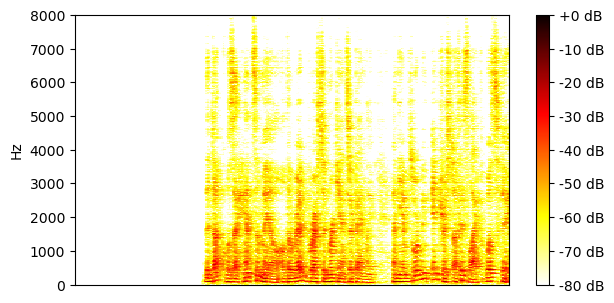
SI-SDR = -11.78 dB |
| Method | Separated source 0 | Separated source 1 | Separated source 2 |
| TI 64ms x 4 frames, BF2 |
SI-SDR = 18.99 dB |
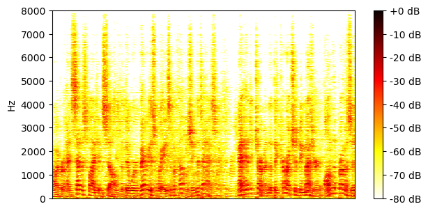
SI-SDR = 11.58 dB |
SI-SDR = 9.00 dB |
| TI 64ms x 4 frames, MN3 |
SI-SDR = 17.13 dB |
SI-SDR = 10.38 dB |
SI-SDR = 7.25 dB |
| TI 64ms x 4 frames, block size 3.2s, BF2 |
SI-SDR = 16.12 dB |
SI-SDR = 1.27 dB |
SI-SDR = -3.71 dB |
| TI 64ms x 4 frames, block size 3.2s, MN3 |
SI-SDR = 15.70 dB |

SI-SDR = 6.47 dB |
SI-SDR = 0.76 dB |
| TV 128ms x 2 frames, BF2 |
SI-SDR = 16.22 dB |
SI-SDR = 6.70 dB |
SI-SDR = 1.42 dB |
| TV 128ms x 2 frames, MN3 |
SI-SDR = 15.43 dB |

SI-SDR = 7.70 dB |
SI-SDR = 3.91 dB |
Example 10
| Mixture |

|
||
|---|---|---|---|
| Ground-truth sources |

SI-SDR = -22.38 dB |

SI-SDR = -7.29 dB |

SI-SDR = 7.16 dB |
| Method | Separated source 0 | Separated source 1 | Separated source 2 |
| TI 64ms x 4 frames, BF2 |
SI-SDR = 4.84 dB |
SI-SDR = 16.55 dB |
SI-SDR = 23.05 dB |
| TI 64ms x 4 frames, MN3 |
SI-SDR = 4.50 dB |
SI-SDR = 13.73 dB |
SI-SDR = 20.96 dB |
| TI 64ms x 4 frames, block size 3.2s, BF2 |
SI-SDR = 1.95 dB |
SI-SDR = 12.73 dB |
SI-SDR = 19.63 dB |
| TI 64ms x 4 frames, block size 3.2s, MN3 |
SI-SDR = 1.88 dB |
SI-SDR = 12.08 dB |
SI-SDR = 19.43 dB |
| TV 128ms x 2 frames, BF2 |
SI-SDR = 3.56 dB |
SI-SDR = 13.37 dB |
SI-SDR = 20.07 dB |
| TV 128ms x 2 frames, MN3 |
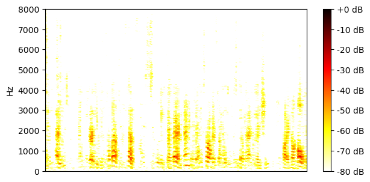
SI-SDR = 2.31 dB |

SI-SDR = 12.07 dB |
SI-SDR = 19.38 dB |
Example 11
| Mixture |

|
||
|---|---|---|---|
| Ground-truth sources |

SI-SDR = -21.30 dB |

SI-SDR = -16.77 dB |

SI-SDR = 15.54 dB |
| Method | Separated source 0 | Separated source 1 | Separated source 2 |
| TI 64ms x 4 frames, BF2 |
SI-SDR = 7.61 dB |
SI-SDR = 10.25 dB |
SI-SDR = 25.74 dB |
| TI 64ms x 4 frames, MN3 |
SI-SDR = 7.80 dB |
SI-SDR = 10.79 dB |
SI-SDR = 26.04 dB |
| TI 64ms x 4 frames, block size 3.2s, BF2 |
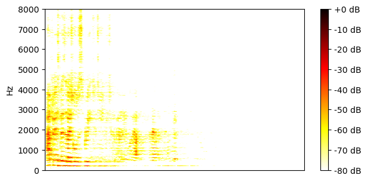
SI-SDR = 4.55 dB |
SI-SDR = 10.48 dB |
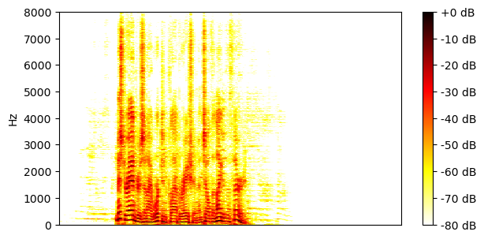
SI-SDR = 24.67 dB |
| TI 64ms x 4 frames, block size 3.2s, MN3 |
SI-SDR = 5.77 dB |
SI-SDR = 9.92 dB |
SI-SDR = 24.92 dB |
| TV 128ms x 2 frames, BF2 |
SI-SDR = 4.92 dB |
SI-SDR = 8.35 dB |
SI-SDR = 24.10 dB |
| TV 128ms x 2 frames, MN3 |
SI-SDR = 4.94 dB |
SI-SDR = 9.48 dB |
SI-SDR = 24.53 dB |
Example 12
| Mixture |

|
||
|---|---|---|---|
| Ground-truth sources |

SI-SDR = -13.66 dB |

SI-SDR = -0.73 dB |
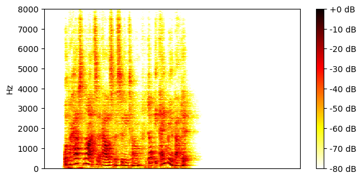
SI-SDR = -0.04 dB |
| Method | Separated source 0 | Separated source 1 | Separated source 2 |
| TI 64ms x 4 frames, BF2 |
SI-SDR = 0.51 dB |
SI-SDR = 15.42 dB |
SI-SDR = 12.58 dB |
| TI 64ms x 4 frames, MN3 |
SI-SDR = 1.46 dB |

SI-SDR = 13.46 dB |
SI-SDR = 12.02 dB |
| TI 64ms x 4 frames, block size 3.2s, BF2 |
SI-SDR = 2.15 dB |
SI-SDR = 10.63 dB |
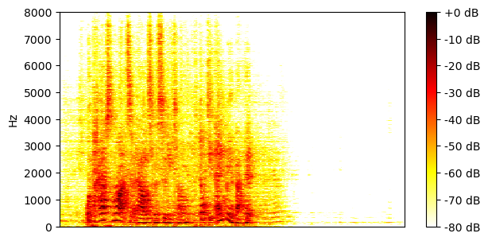
SI-SDR = 10.52 dB |
| TI 64ms x 4 frames, block size 3.2s, MN3 |
SI-SDR = 3.21 dB |
SI-SDR = 11.37 dB |
SI-SDR = 11.43 dB |
| TV 128ms x 2 frames, BF2 |
SI-SDR = -5.36 dB |
SI-SDR = 9.50 dB |
SI-SDR = 9.39 dB |
| TV 128ms x 2 frames, MN3 |
SI-SDR = -3.50 dB |
SI-SDR = 9.40 dB |
SI-SDR = 9.44 dB |
Example 13
| Mixture |

|
||
|---|---|---|---|
| Ground-truth sources |

SI-SDR = -17.54 dB |

SI-SDR = 7.73 dB |

SI-SDR = -8.41 dB |
| Method | Separated source 0 | Separated source 1 | Separated source 2 |
| TI 64ms x 4 frames, BF2 |
SI-SDR = 11.82 dB |

SI-SDR = 26.63 dB |
SI-SDR = 16.86 dB |
| TI 64ms x 4 frames, MN3 |
SI-SDR = 12.47 dB |
SI-SDR = 25.49 dB |
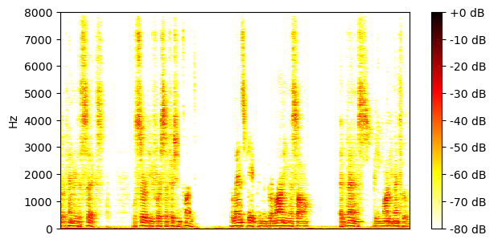
SI-SDR = 15.64 dB |
| TI 64ms x 4 frames, block size 3.2s, BF2 |
SI-SDR = 12.29 dB |
SI-SDR = 24.06 dB |
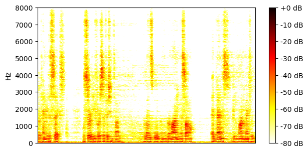
SI-SDR = 14.27 dB |
| TI 64ms x 4 frames, block size 3.2s, MN3 |

SI-SDR = 11.91 dB |

SI-SDR = 24.00 dB |
SI-SDR = 14.39 dB |
| TV 128ms x 2 frames, BF2 |
SI-SDR = 12.73 dB |
SI-SDR = 25.80 dB |
SI-SDR = 15.62 dB |
| TV 128ms x 2 frames, MN3 |
SI-SDR = 11.81 dB |
SI-SDR = 24.12 dB |
SI-SDR = 14.47 dB |
Example 14
| Mixture |

|
||
|---|---|---|---|
| Ground-truth sources |
SI-SDR = -4.40 dB |

SI-SDR = 4.35 dB |

SI-SDR = -19.97 dB |
| Method | Separated source 0 | Separated source 1 | Separated source 2 |
| TI 64ms x 4 frames, BF2 |
SI-SDR = 11.07 dB |
SI-SDR = 15.74 dB |
SI-SDR = 14.67 dB |
| TI 64ms x 4 frames, MN3 |
SI-SDR = 5.49 dB |
SI-SDR = 11.06 dB |
SI-SDR = 17.87 dB |
| TI 64ms x 4 frames, block size 3.2s, BF2 |
SI-SDR = 10.79 dB |
SI-SDR = 15.45 dB |
SI-SDR = 20.42 dB |
| TI 64ms x 4 frames, block size 3.2s, MN3 |
SI-SDR = 10.24 dB |
SI-SDR = 14.66 dB |

SI-SDR = 15.83 dB |
| TV 128ms x 2 frames, BF2 |
SI-SDR = 5.12 dB |

SI-SDR = 9.23 dB |
SI-SDR = 15.78 dB |
| TV 128ms x 2 frames, MN3 |
SI-SDR = 5.13 dB |
SI-SDR = 9.30 dB |
SI-SDR = 17.96 dB |
Example 15
| Mixture |

|
||
|---|---|---|---|
| Ground-truth sources |

SI-SDR = -20.16 dB |

SI-SDR = 11.94 dB |
SI-SDR = -12.88 dB |
| Method | Separated source 0 | Separated source 1 | Separated source 2 |
| TI 64ms x 4 frames, BF2 |
SI-SDR = 1.77 dB |
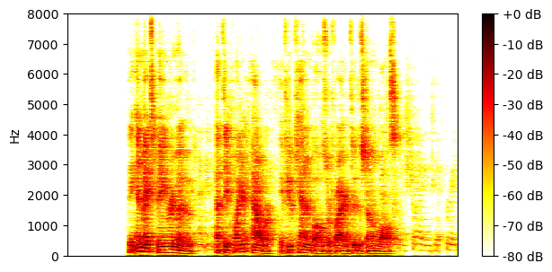
SI-SDR = 17.97 dB |
SI-SDR = 6.18 dB |
| TI 64ms x 4 frames, MN3 |
SI-SDR = 2.15 dB |
SI-SDR = 17.63 dB |
SI-SDR = 4.32 dB |
| TI 64ms x 4 frames, block size 3.2s, BF2 |
SI-SDR = -2.79 dB |
SI-SDR = 15.85 dB |
SI-SDR = -0.29 dB |
| TI 64ms x 4 frames, block size 3.2s, MN3 |
SI-SDR = -4.01 dB |
SI-SDR = 16.11 dB |
SI-SDR = 0.02 dB |
| TV 128ms x 2 frames, BF2 |
SI-SDR = -3.90 dB |
SI-SDR = 15.44 dB |
SI-SDR = -2.40 dB |
| TV 128ms x 2 frames, MN3 |
SI-SDR = -1.59 dB |

SI-SDR = 15.39 dB |
SI-SDR = 0.25 dB |
Example 16
| Mixture |
|
||
|---|---|---|---|
| Ground-truth sources |

SI-SDR = 4.64 dB |

SI-SDR = -6.00 dB |

SI-SDR = -12.91 dB |
| Method | Separated source 0 | Separated source 1 | Separated source 2 |
| TI 64ms x 4 frames, BF2 |
SI-SDR = 14.72 dB |
SI-SDR = 12.07 dB |
SI-SDR = 1.96 dB |
| TI 64ms x 4 frames, MN3 |
SI-SDR = 14.61 dB |
SI-SDR = 10.38 dB |
SI-SDR = 3.92 dB |
| TI 64ms x 4 frames, block size 3.2s, BF2 |
SI-SDR = 13.66 dB |
SI-SDR = 9.61 dB |
SI-SDR = 1.51 dB |
| TI 64ms x 4 frames, block size 3.2s, MN3 |
SI-SDR = 13.86 dB |
SI-SDR = 8.78 dB |
SI-SDR = 2.96 dB |
| TV 128ms x 2 frames, BF2 |
SI-SDR = 13.11 dB |
SI-SDR = 9.04 dB |
SI-SDR = 0.53 dB |
| TV 128ms x 2 frames, MN3 |
SI-SDR = 13.15 dB |
SI-SDR = 8.60 dB |
SI-SDR = 1.50 dB |
Example 17
| Mixture |
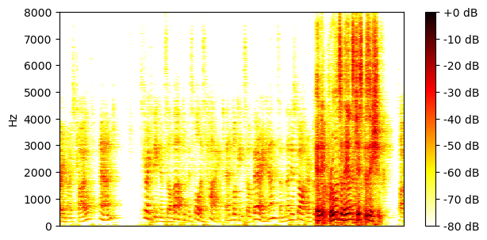
|
||
|---|---|---|---|
| Ground-truth sources |

SI-SDR = -23.30 dB |

SI-SDR = 14.56 dB |
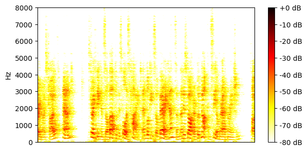
SI-SDR = -15.04 dB |
| Method | Separated source 0 | Separated source 1 | Separated source 2 |
| TI 64ms x 4 frames, BF2 |
SI-SDR = -7.10 dB |
SI-SDR = 22.80 dB |
SI-SDR = 13.34 dB |
| TI 64ms x 4 frames, MN3 |
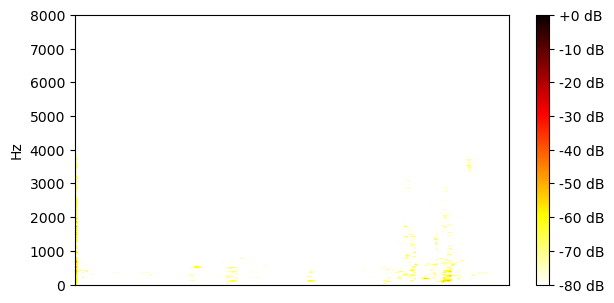
SI-SDR = -16.83 dB |
SI-SDR = 22.35 dB |
SI-SDR = 12.94 dB |
| TI 64ms x 4 frames, block size 3.2s, BF2 |
SI-SDR = -4.20 dB |
SI-SDR = 23.28 dB |
SI-SDR = 9.95 dB |
| TI 64ms x 4 frames, block size 3.2s, MN3 |
SI-SDR = -1.96 dB |
SI-SDR = 23.59 dB |
SI-SDR = 11.32 dB |
| TV 128ms x 2 frames, BF2 |
SI-SDR = -4.92 dB |
SI-SDR = 21.98 dB |
SI-SDR = 10.40 dB |
| TV 128ms x 2 frames, MN3 |
SI-SDR = -2.89 dB |
SI-SDR = 22.31 dB |

SI-SDR = 10.98 dB |
Example 18
| Mixture |

|
||
|---|---|---|---|
| Ground-truth sources |

SI-SDR = -13.78 dB |
SI-SDR = 10.43 dB |

SI-SDR = -13.50 dB |
| Method | Separated source 0 | Separated source 1 | Separated source 2 |
| TI 64ms x 4 frames, BF2 |
SI-SDR = 9.15 dB |
SI-SDR = 20.46 dB |
SI-SDR = 8.92 dB |
| TI 64ms x 4 frames, MN3 |
SI-SDR = 7.70 dB |
SI-SDR = 20.10 dB |

SI-SDR = 8.04 dB |
| TI 64ms x 4 frames, block size 3.2s, BF2 |
SI-SDR = 2.81 dB |
SI-SDR = 18.97 dB |
SI-SDR = 2.31 dB |
| TI 64ms x 4 frames, block size 3.2s, MN3 |
SI-SDR = 4.01 dB |
SI-SDR = 18.95 dB |
SI-SDR = 4.06 dB |
| TV 128ms x 2 frames, BF2 |
SI-SDR = 2.63 dB |
SI-SDR = 20.20 dB |
SI-SDR = 2.05 dB |
| TV 128ms x 2 frames, MN3 |
SI-SDR = 2.56 dB |
SI-SDR = 19.19 dB |
SI-SDR = 2.78 dB |
Example 19
| Mixture |
|
||
|---|---|---|---|
| Ground-truth sources |

SI-SDR = 7.85 dB |
SI-SDR = -10.99 dB |

SI-SDR = -11.67 dB |
| Method | Separated source 0 | Separated source 1 | Separated source 2 |
| TI 64ms x 4 frames, BF2 |
SI-SDR = 19.26 dB |
SI-SDR = 10.61 dB |
SI-SDR = 9.10 dB |
| TI 64ms x 4 frames, MN3 |
SI-SDR = 18.00 dB |
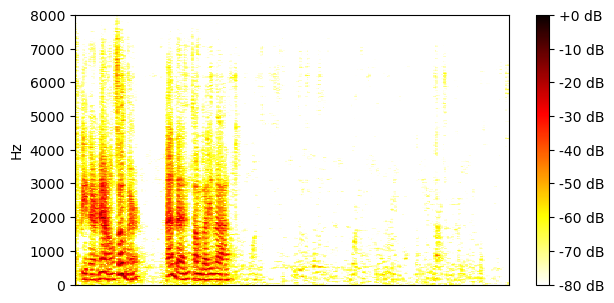
SI-SDR = 9.95 dB |
SI-SDR = 7.18 dB |
| TI 64ms x 4 frames, block size 3.2s, BF2 |
SI-SDR = 16.70 dB |
SI-SDR = 5.87 dB |
SI-SDR = 4.29 dB |
| TI 64ms x 4 frames, block size 3.2s, MN3 |

SI-SDR = 16.63 dB |
SI-SDR = 7.57 dB |

SI-SDR = 5.19 dB |
| TV 128ms x 2 frames, BF2 |
SI-SDR = 17.77 dB |
SI-SDR = 4.10 dB |
SI-SDR = 2.01 dB |
| TV 128ms x 2 frames, MN3 |

SI-SDR = 16.49 dB |
SI-SDR = 5.00 dB |
SI-SDR = 3.13 dB |
Example 20
| Mixture |
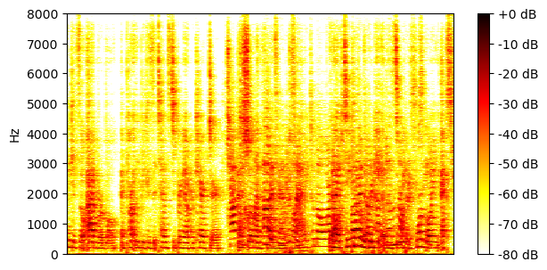
|
||
|---|---|---|---|
| Ground-truth sources |

SI-SDR = 2.36 dB |

SI-SDR = -13.69 dB |

SI-SDR = -3.26 dB |
| Method | Separated source 0 | Separated source 1 | Separated source 2 |
| TI 64ms x 4 frames, BF2 |
SI-SDR = 17.08 dB |
SI-SDR = 11.21 dB |
SI-SDR = 15.54 dB |
| TI 64ms x 4 frames, MN3 |
SI-SDR = 16.21 dB |
SI-SDR = 11.88 dB |
SI-SDR = 14.04 dB |
| TI 64ms x 4 frames, block size 3.2s, BF2 |
SI-SDR = 13.18 dB |
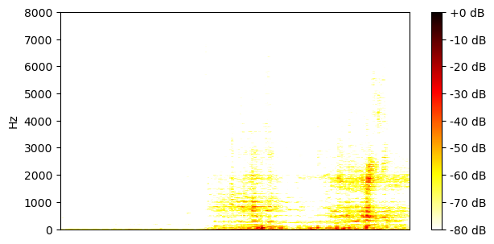
SI-SDR = -39.44 dB |
SI-SDR = 7.02 dB |
| TI 64ms x 4 frames, block size 3.2s, MN3 |
SI-SDR = 14.26 dB |
SI-SDR = -2.84 dB |
SI-SDR = 8.10 dB |
| TV 128ms x 2 frames, BF2 |

SI-SDR = 13.37 dB |
SI-SDR = -21.01 dB |
SI-SDR = 6.97 dB |
| TV 128ms x 2 frames, MN3 |
SI-SDR = 13.60 dB |
SI-SDR = -24.83 dB |
SI-SDR = 6.60 dB |